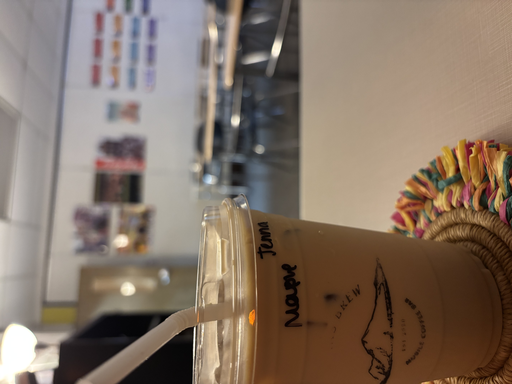

Iced Salted Maple Latte
Serves 1 • 5 minutes
Ingredients
- Espresso
- Maple syrup
- Salt
- Milk
- Ice
- Water
Instructions
- Brew a double shot of espresso.
- In a cup, fill to the brim with ice.
- Pour in 215 ml of milk.
- Pour in 15 ml of maple syrup.
- Pour the double shot of espresso over the top.
- Add salt to taste.
- Stir vigorously and enjoy!
